| 日付 | 2016年2月27日（土） |
|---|---|
| 山域 | 奥武蔵 |
| メンバー | 家族（妻、長女・4歳、長男・2歳） |
| 山行形態 | 子連れ日帰り |
| アクセス | 車 |
| ルート (Map) | パラグライダー離陸場 (9:42) - (10:23) 堂平山 - (10:51) 笠山峠 - (11:16) 笠山 (11:57) - (13:04) 堂平山 (13:24) - (13:50) パラグライダー離陸場 |
大霧山・堂平山・笠山は比企三山と呼ばれている。
大霧山は2008年に登ったが、堂平山と笠山はずいぶんと長い間放置していた。
今回はその二山を結んで歩いてみることにする。
駐車場に車を停める。標高820m。
ここはパラグライダーの離陸場だ。
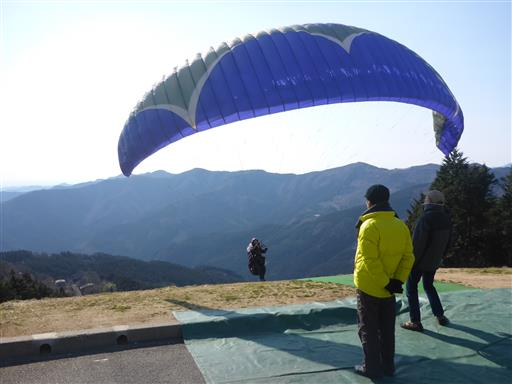
展望台と書いてある標識があったため、そこの登山口から登り始める。
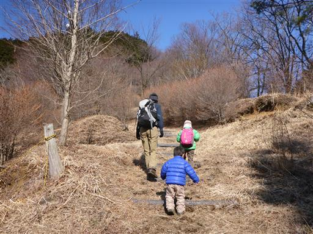
すぐ先に東屋があり、そのまま登って行くと鉄塔が現れる。
道はそこから急降下。登山口のすぐ上にあった東屋が展望台だったようだ。
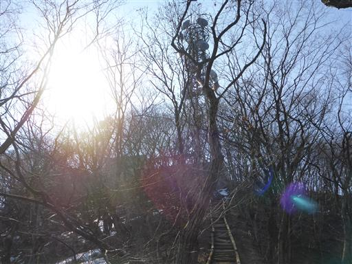
道は再び車道に戻ってくる。完全な無駄足になってしまった。
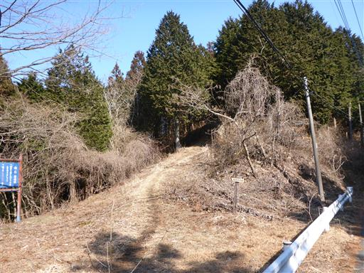
車道と分かれた登山道に「森林学習道」と書かれた標識が立っている。
この道がどこに通じているのか、肝心なことが書かれていない。
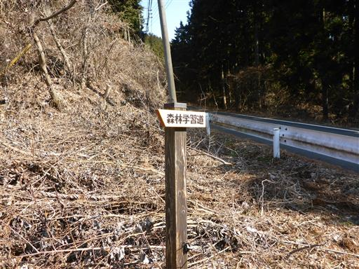
雪が少しだけ残っている。
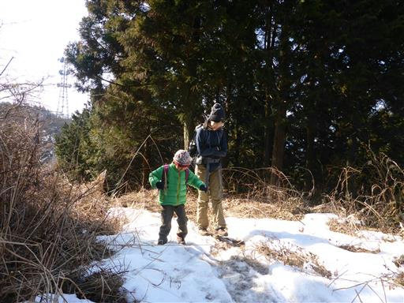
所々に鉄塔が建ち、冴えない道が続く。
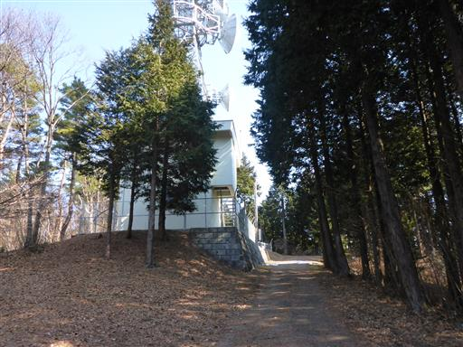
再び車道に出て来る。登山道は度々車道と合流、分離を繰り返す。
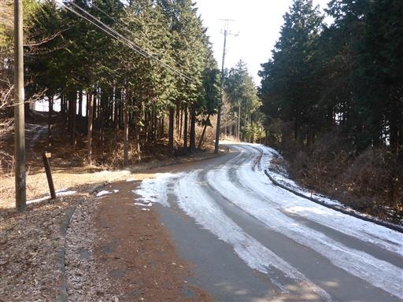
ようやく山道らしくなってきた。
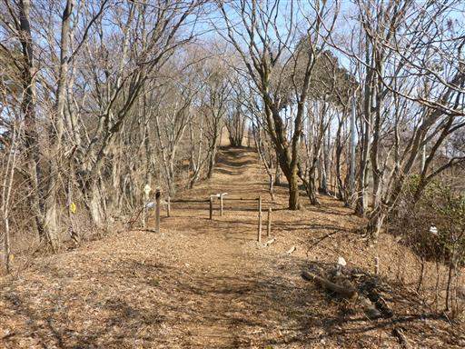
すぐに堂平山に到着する。標高876m。
山頂には天文台が建っていて、現在は一般公開されている。
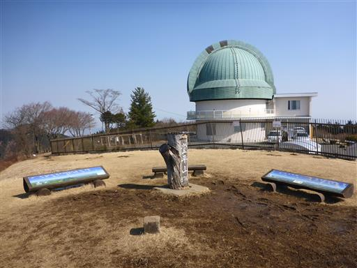
山頂は草原が広がっていて、展望は非常によい。
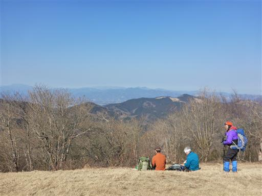
まだ歩き始めて間もないため、ここでは休憩を取らずに笠山に向かう。
道端には木材が積まれている。
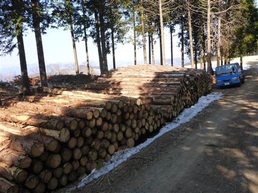
広大な芝生広場。残念ながら養生中のため立ち入り禁止だ。
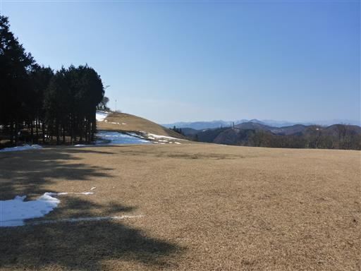
外秩父七峰縦走ハイキングコースの標識があちらこちらにある。
しかしそれ以外の標識は見当たらない。有用な情報は主に落書きに頼る。
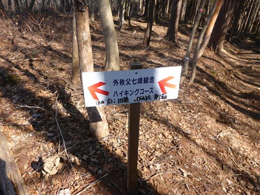
笠山峠に到着。ここから笠山に続く小さな道に入って行く。

目の前に笠山が見える。尖った山頂部を持っていて、遠くから見ると良く目立つ山だ。
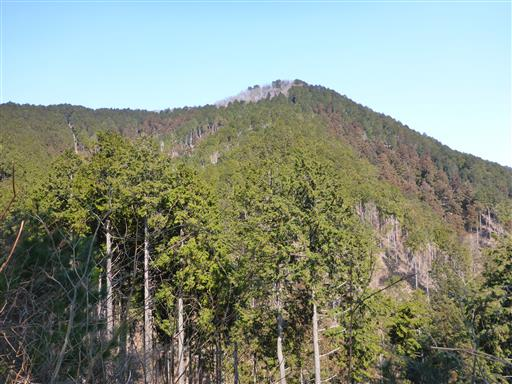
最後の方は急坂になる。
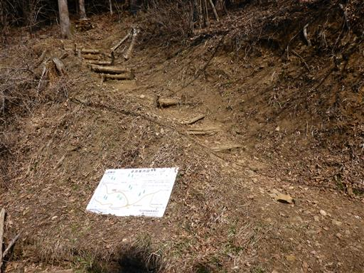
笠山に到着。標高837m。
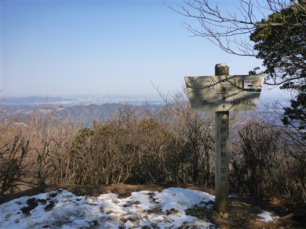
山頂標識はあるが、その先の笠山神社方面に登り坂が続いている。
本当の山頂はこの先のようだ。この辺りは岩がちな地形が続く。
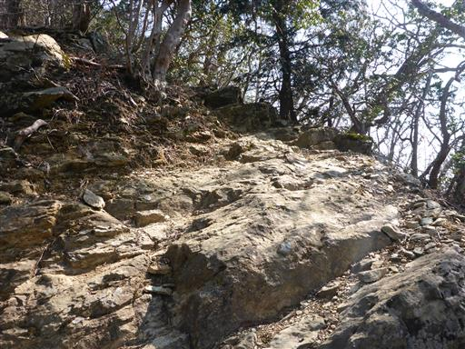
笠山神社に到着。標高842mでこちらの方が高いが展望は無い。
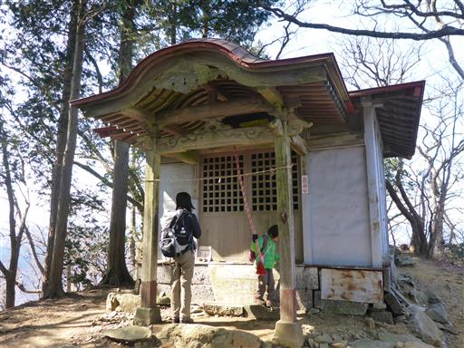
山頂標識のある場所まで戻って昼食をとる。
展望は北側に少し開けるだけで、大したものは見えない。
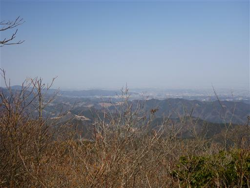
昼食を取ったら下山開始。
登りは一歩も歩かなかった息子も、下山は自ら歩き出す。
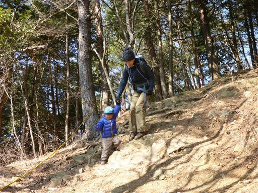
簡単な部分は手をつながなくても安定して歩けるようになってきた。
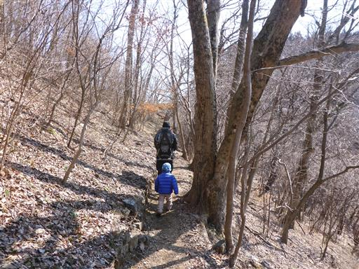
途中で木の枝を拾って遊んでいる。歩くのが遅いので娘は先に行ってしまった。
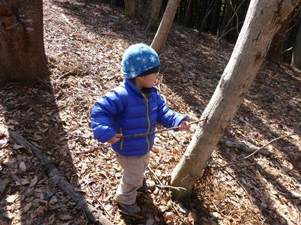
再び堂平山山頂に戻ってくる。この山を越える必要があるため、下山と言っても結構登る。
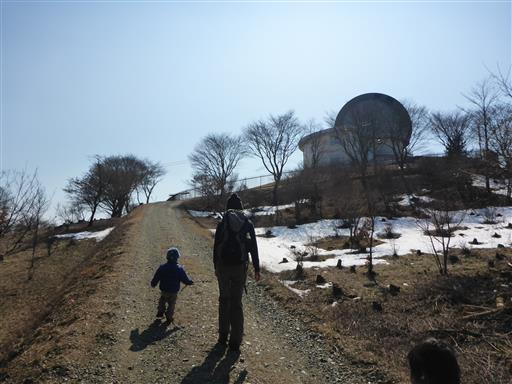
山頂でおやつ休憩を取る。目の前に見えるのは大霧山から北に続く山稜だ。
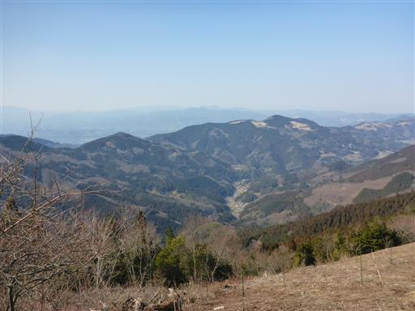
帰りは面倒な登山道を避けて、車道を歩いて行く。
日影になっているところは、所々凍り付いている。
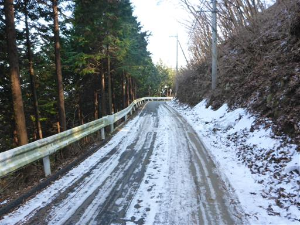
駐車場に戻ってくる。息子は下山のみだが最後まで歩ききった。
相変わらず車道が多く地味な山域だったが、久々にそこそこ標高の高い山に登れた。
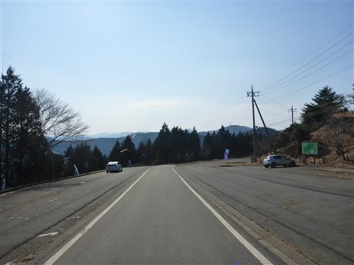